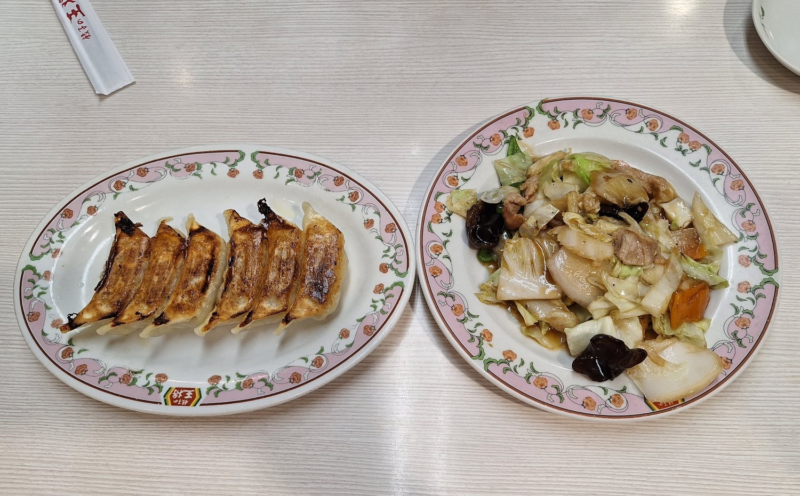
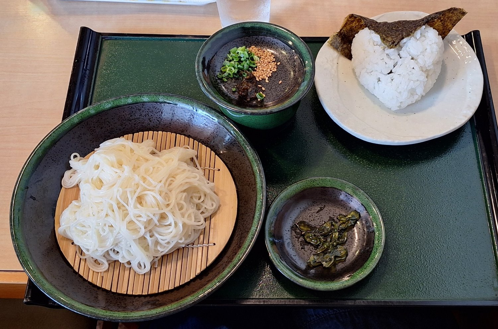

在地美食
日本各地都有當地的特色美食，這些在地美食都是旅途中不可以錯過的好味道。

唐揚げ食堂 ごいち 本店
炸雞酥脆多汁，白飯無限續加，高CP值飽足你的味蕾與心靈！

広島風 お好焼き みよし 駅前店
品嚐愛媛在地「三津浜燒」，感受傳統與創新的完美融合！

ドン☆ぶり屋
份量滿點、價格實惠、口味多樣，新居濱在地冠軍丼飯，滿足你的大胃口！

香川の食堂 まいしょく家 兵庫町店
高松必訪平價食堂，在地好米、新鮮海味，盡享道地家常味！

徳島ラーメン麺王 高松駅前店
豚骨醬油德島拉麵，免費生蛋，替玉多變，深夜至福首選！

餃子の王将 高松南新町店
方便又便宜，好吃C/P值高
骨付鳥-寄鳥味鳥
香川名物「骨付鳥」必吃！家庭式居酒屋溫馨氛圍，嫩雞香嫩多汁，老雞越嚼越香，高松在地聚餐首選！

瀬戸よ志
小豆島名物素麵，到此一遊可品嘗看看。
留言板